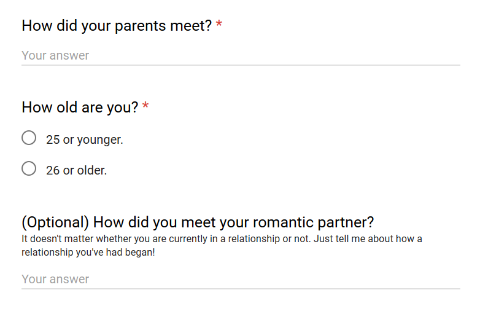

The questions no one cares about, but everyone's wondering
The question was:
Raw data for the 137 answers available here.
Let me tell you how my parents met. Or rather, the story of how I learned the story of how my parents met.
I was 9 years old when I thought to ask while watching the Disney channel. There was a whole episode of That's So Raven where, for one reason or another, the kids were trying to find out the story of how their parents first met. They were talking about when their first date was, where it was, and so on. It seemed like such a big deal! It was perhaps the first moment they laid eyes on each other. It was the beginning of a life long journey with their chosen partner.
I got curious about my own parents' story. I started to wonder if my dad had taken my mom to somewhere nearby. Perhaps it was a restaurant I had already seen! Would the table where he proposed to her still be there? That would be such a fun thing to revisit. So I turn to my mom and I ask, "Hey mom, when was your first date with dad?"
My mother looks back at me, puzzled. "A date? There's some in the kitchen." Her English was not great, and I did not know how to translate "date" in Arabic since I had just learned that word from an American TV show.
After a few minutes of trying to explain, she finally got it, "Oh! No son, we don't do that here [in our culture]. We met when he came over to the house as a suitor." This was bizarre to me at the time.
Here I'd like to pause and reflect on the surprising pervasiveness of western culture. I had never even left Egypt at that point in my life, and yet I had become so accustomed to the ways in which people find and express love and how relationships work overseas that it didn't occur to me that this wasn't normal. There was no table at which my dad proposed because there was no proposal. He asked if she wanted to marry, they talked about it and hung out a few times (along with the family), and then went for it (an engagement period before actually getting married for good).
I was really curious how dating has changed throughout the years. The two questions in the survey were meant to contrast how dating was like a generation (or two) ago to our generation. I've gone through and labelled each answer in the original data with what category I think it fits in (as in, did they meet in college, at work etc.) If you answered "26 years or older", then your answer, along with your parents' was lumped in as "old". That, and the fact that second question was optional means we have a lot more data for "old" than for "young".
Some things haven't changed. College is by far the most common place where people find their significant others across generations. Work is the second most common for "old". The fact that Work isn't very common among young people suggests that many will probably go on to find love in the workplace (so if you haven't found The One yet, there seems to be hope!)
On the other side, Online dating is a lot more popular now than it used to be, which seems to have displaced Bars as a place for budding romance (and/or hookups). There was not a single young relationship that began at a bar!
I was rather surprised to see Blind Dating to be somewhat uncommon in the older genration, and kind of sad that it's no longer a thing (but of course, there's an app for it now).
I encourage you to explore the data with this interactive graph, and read about people's stories. Clicking on any of the items in the legend will bring up the stories for that category below.
Clicking on the legend items also has a side effect of toggling the data on/off. I apologize, I did not have time to fix this.
Click on a category in the legend (above) to reveal the stories behind it here!
Many of these stories are about being in the right place at the right time to fall in love and live happily ever after. Here's a couple of examples:
At the lake, we had cabins on the same lake - still together 38 years later :)
Randomly assigned seats next to each other in first class on an international flight during Interim.
We met at St. Olaf! We live in the same dorm and ended up talking because of that.
Perhaps if your cabin was on the other side of the lake, your seat number was one digit off, or your dorm was just next door, you wouldn't be with the love of your life today.
I don't believe such events have as profound an effect on our lives as they seem. If you hadn't met this person, your life would have kept going, and you would have likely met someone else, in some mundane or fantastic way, and that'd be your story.
That your story happened to be this particular one, with this particular person, as opposed to all the other possible outcomes (of which there are many!), should not surprising. For the same reason that getting 10 heads in a row of coin flips should not be surprising. Out of all the possible sequences of 10 coin flips, 10 heads in a row is just as random and likely as any other sequence of heads and tails.
This might seem unintuitive at first, so allow me to say it another way. The chances of you getting any particular sequence of 10 coin tosses is very low (0.009%). But the chances of you getting some sequence is 100% (however you flip the coin, if you do it 10 times, you'll get 10 results).
I say all this not to take away from how special your story feels to you. On the contrary, what I hope I've convinced you of is that, while the odds of any particularly special thing happening in your life are very low, the odds of some special thing happening in your life is almost certain! In a world where things happen all the time, rare events are really quite common. As long as you continue to live, and do things, and flip coins, the outcomes will be especially rare and unique to you.
I say this to the hopeless romantic, to not fret over losing "the one". Your odds of ending up with this one are tragically low.
But your odds of ending up with someone, look pretty good!
– Omar